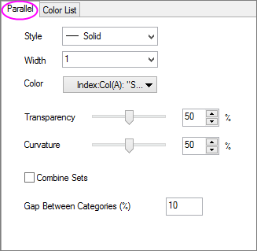
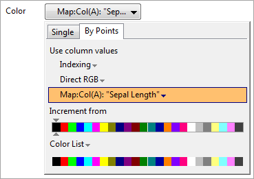
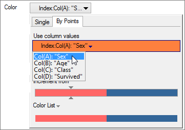
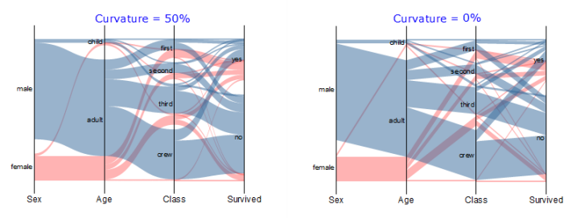
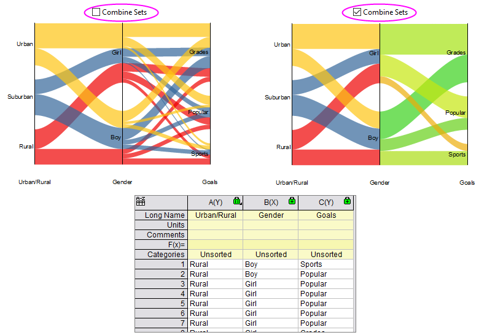
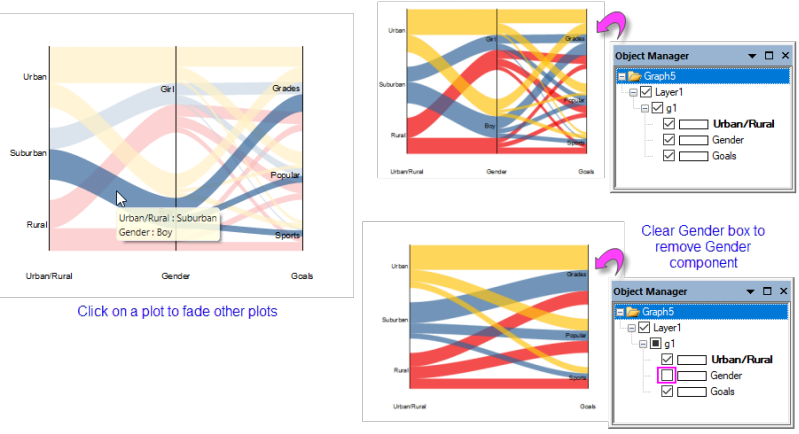
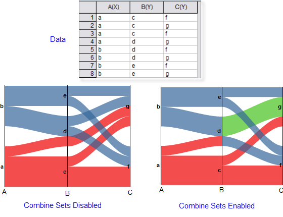

Die Registerkarte Parallel (Details Zeichnung)
PD-Dialog-Parallel-Tab
Die Registerkarte Parallel (Details Zeichnung) bietet Bedienelemente, um den Stil von Paralleldiagrammen festzulegen. Dies umfasst Bedienelemente für die Farbtransparenz und die "Krümmung" (der Glättungseffekt, der oft in sogenannten "Alluvial-Diagrammen" zu sehen ist).
-
- 
Stil
Wählen Sie den Linienstil aus dieser Auswahlliste. Beachten Sie, dass das Ändern dieser Einstellung (d. h. wenn sich die Linien überschneiden) womöglich keinen sichtbaren Effekt hat.
|
Hinweis:
- Sie können die Muster der gestrichelten Linie mit Hilfe der Gruppe Gestrichelte Linien auf der Registerkarte Grafik des Dialogs Optionen (Einstellungen: Optionen) benutzerdefiniert anpassen.
- Bei geringer Bildschirmauflösung oder in kleinen Fenstern können gestrichelte Linien durchgezogen erscheinen. Im Ausdruck dürfte die Linie jedoch korrekt gezeichnet werden.
|
Breite
Wählen Sie oder geben Sie die gewünschte Linienbreite in dieses Auswahlfeld ein. Die Linienbreite wird in Punkten gemessen, wobei 1 Punkt=1/72 Zoll entsprechen.
Farbe
Wählen Sie Ihre Farbe mit Origins Farbauswahl. Beachten Sie, dass es auf der Farbauswahl, abhängig vom Diagrammtyp, bis zu drei Registerkarten gibt -- "Einzeln", "Nach Punkten" und "Nach Zeichnungen".
Normalerweise bilden Sie Farbe beim Erstellen eines Paralleldiagramms mit Hilfe einer Spalte mit numerischen Werten ab, indem Sie auf die Registerkarte Nach Punkten klicken und die Farbspalte in der Auswahlliste Abbildung wählen.
- 
Beim Erstellen eines Parallelsatzdiagramms setzen Sie Farbe ein, indem Sie eine Spalte mit kategorialen Werten verwenden. Sie können zum Beispiel eine Zeichnungsfarbe nach Geschlecht (z. B. "männlich" = blau, "weiblich" = rosa) zuweisen, indem Sie auf die Registerkarte Nach Punkten klicken und in der Auswahlliste Index auf die Arbeitsblattspalte zeigen, die die Daten zum Geschlecht enthält.
- 
Weitere Informationen finden Sie unter Datensatz zum Einstellen der Diagrammfarbe verwenden.
_Parallel_Tab/Tip_icon.png) |
Wenn die Farbe auf Abbildung gesetzt ist, können die Linienfarben für jeden Wert auf der Registerkarte Farbabbildung weiter benutzerdefiniert angepasst werden, während Farbe auf Inkrement oder Index gesetzt ist. Die Farben der Röhrchen (Pipes) für jede Kategorie können mit dem Inkrementeditor gesteuert werden.
|
Transparenz
Bewegen Sie den Schieber oder geben Sie eine gewünschte ganze Zahl von 0 bis 100 in das Kombinationsfeld ein. Beachten Sie, dass 0 vollständig undurchsichtig ist und 100 vollständig transparent.
Beachten Sie, dass Sie die Schaltfläche Anwenden verwenden können, um die Schieberwirkung zu sehen und den Dialog Details Zeichnung nicht schließen müssen.
Krümmung
Bewegen Sie den Schieber oder geben Sie eine ganze Zahl von 0 bis 100 in das Kombinationsfeld ein. Beachten Sie, dass 0 vollständig ohne Krümmung ist und 100 mit maximaler Krümmung.
- 
Sätze kombinieren
Dieses Kontrollkästchen auf der Registerkarte Parallel des Dialogs Details Zeichnung modifiziert das Zeichnen des Diagramms beträchtlich.
- Wenn Sätze kombinieren deaktiviert ist (Standard), werden die Kategorien und die Farbaufteilung der am weitesten links stehenden Achse bis zur am weitesten rechts stehenden Achse übernommen.
- Wenn Sätze kombinieren aktiviert ist, erstellen Sie Unterdiagramme, definiert durch jedes Paar vertikaler Achsen.
- 
Welche Einstellung Sie wählen, hängt davon ab, worauf Sie den Schwerpunkt legen möchten. Im obigen Beispiel wird ein Datensatz mit Schülern einer Highschool auf den Effekt von Gemeindetyp und Geschlecht auf ihre Ziele als Schüler untersucht. Wenn Sätze kombinieren deaktiviert ist, können Sie den Effekt des Gemeindetyps (Städtisch = gelb, Vorort = blau, Ländlich = rot) auf die Ziele klarer erkennen, da die Farben, die diesen Kategorien zugewiesen sind, sich durch das gesamte Diagramm ziehen.
Umgekehrt, wenn Sätze kombinieren aktiviert ist, ist es schwieriger, den Effekt des Gemeindetyps auf Ziele zu erkennen, dafür wird der Effekt des Geschlechts deutlicher. Daher macht es Sinn, diese Einstellung ein- und auszuschalten, um zu sehen, wie sich der Schwerpunkt verschiebt.
|
Es gibt einige andere Dinge, die Sie tun können, um Trends in Paralleldiagrammen erkennen zu können. Sie können auf eine Zeichnung auf der Diagrammseite klicken. Dadurch werden alle anderen Zeichnungen auf der Seite abgeblendet. Eine andere Möglichkeit ist, die Kontrollkästchen in der Objektverwaltung zu verwenden, um Zeichnungen auf der Diagrammseite temporär zu verbergen oder zu zeigen.

|
Zeichenreihenfolge innerhalb der Kategorien
Beim Zeichnen von numerischen Daten entspricht die Zeichenreihenfolge der Datenpunkte dem Zeilenindex (Zeilennummer). Beim Zeichnen von kategorialen Daten wird die Zeichnungsreihenfolge innerhalb der Kategorie von der Sortierungsreihenfolge in der kategorialen Spalte bestimmt. Wenn die Daten unsortiert sind, wird die Zeichenreihenfolge durch die Erscheinungsreihenfolge innerhalb der Spalte bestimmt.
Wenn Sie Sätze kombinieren aktivieren, wird die Zeichnungsreihenfolge nur von der Sortierungsreihenfolge in den angrenzenden Spalten bestimmt. Beachten Sie, dass die Zeichenreihenfolge sich von der Basis der Grafik nach oben bewegt.
- 
Abstand zwischen Kategorien
Diese Option steuert den Abstand zwischen den Kategorien auf der vertikalen Achse. Das Experimentieren mit dieser Einstellung kann helfen, eine bessere visuelle Trennung der Kategorien zu erstellen. Nicht auf Variablen anwendbar, die auf einer kontinuierlichen Skala gezeichnet wurden.